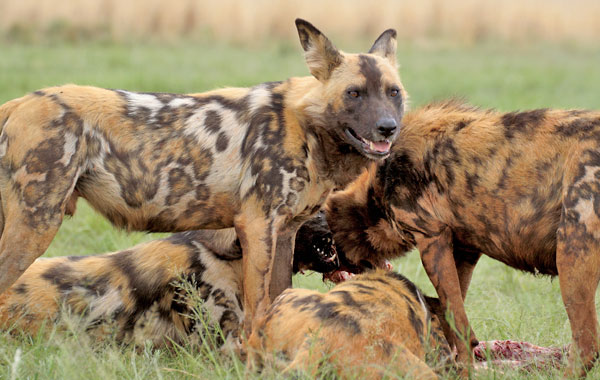
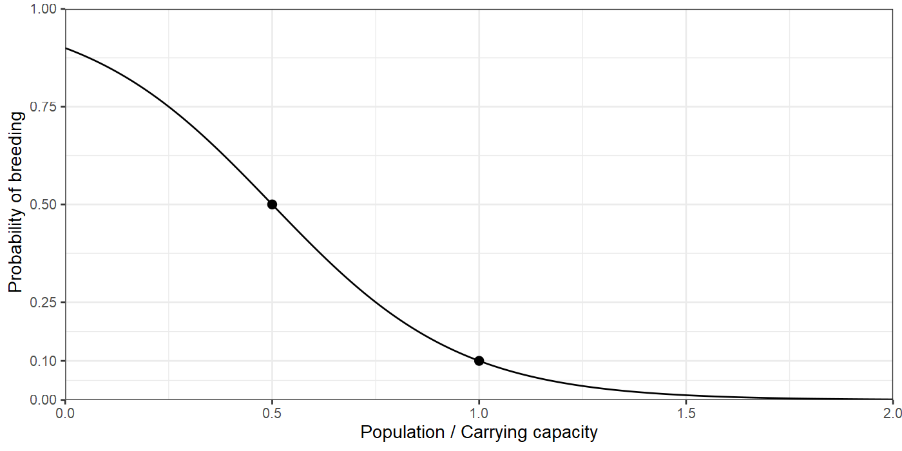
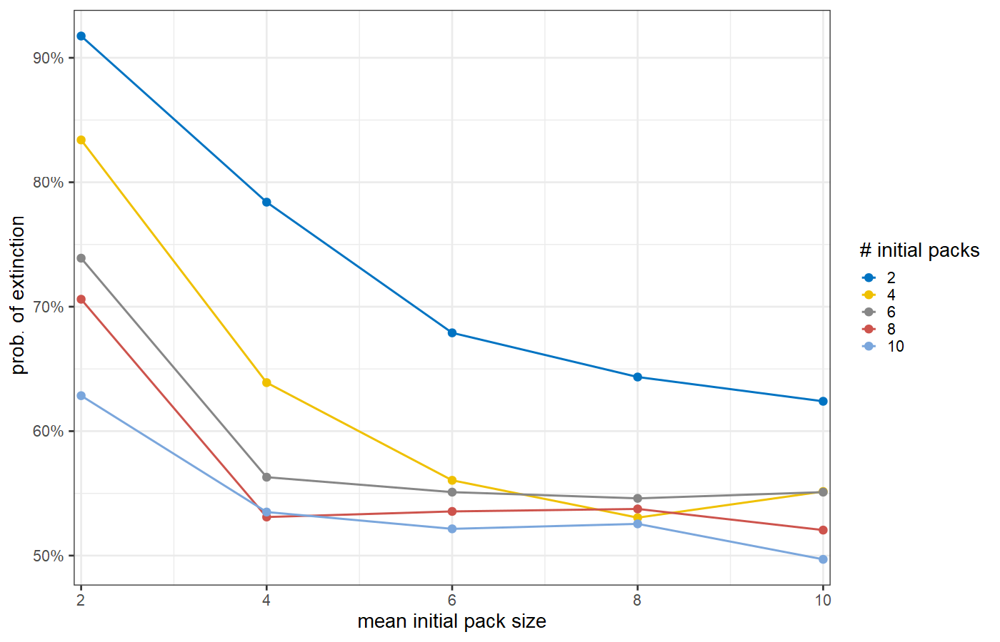
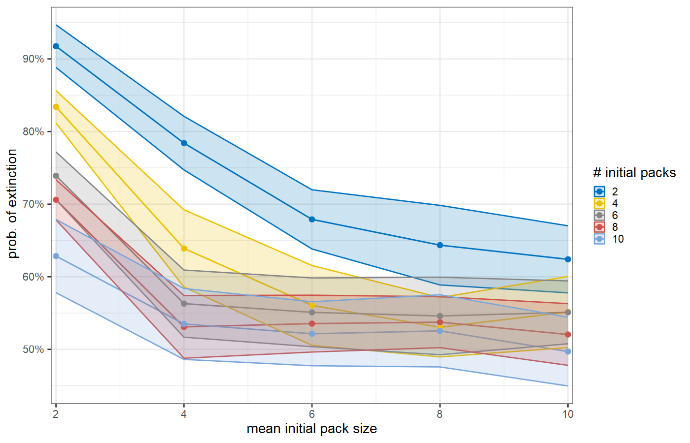
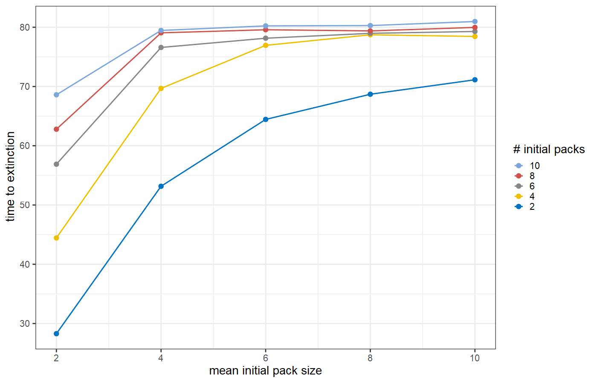
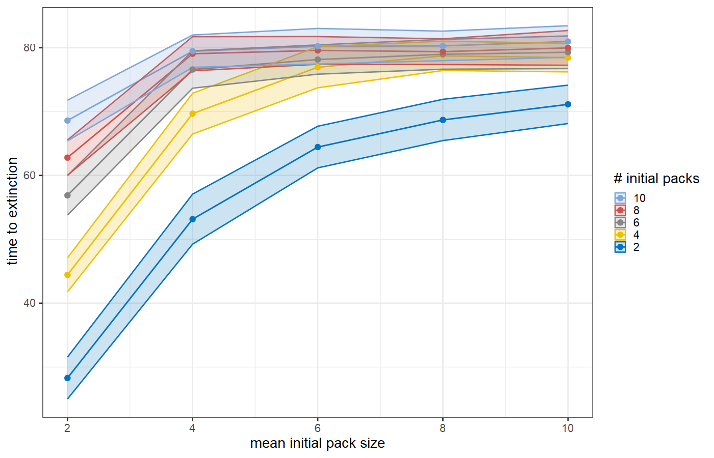
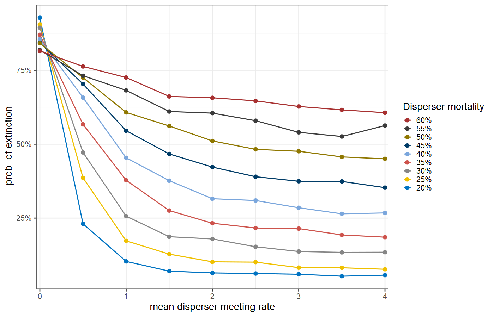
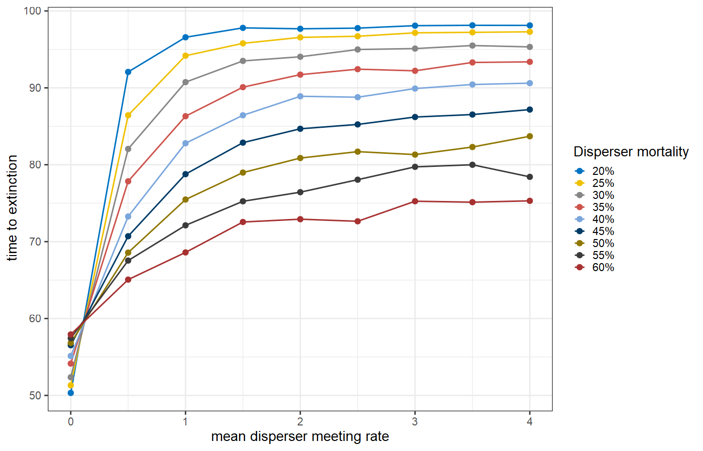
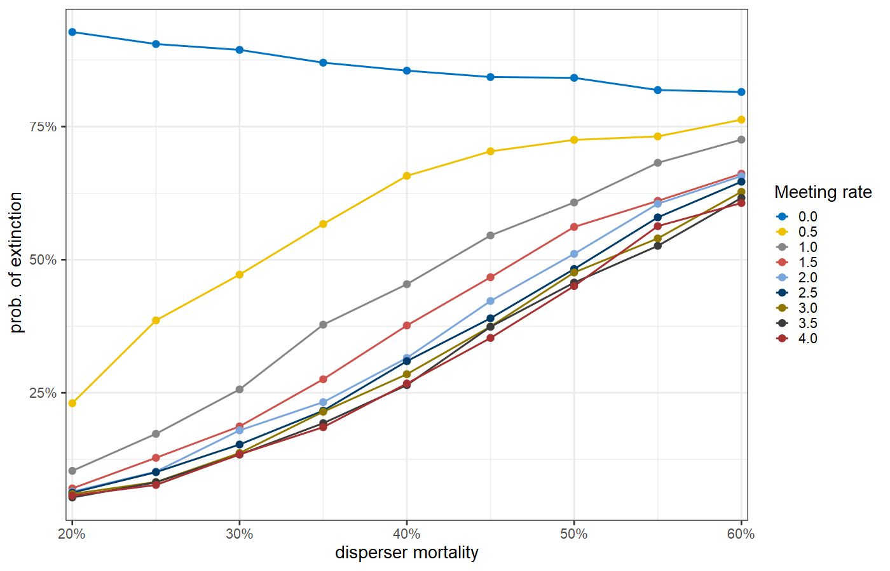
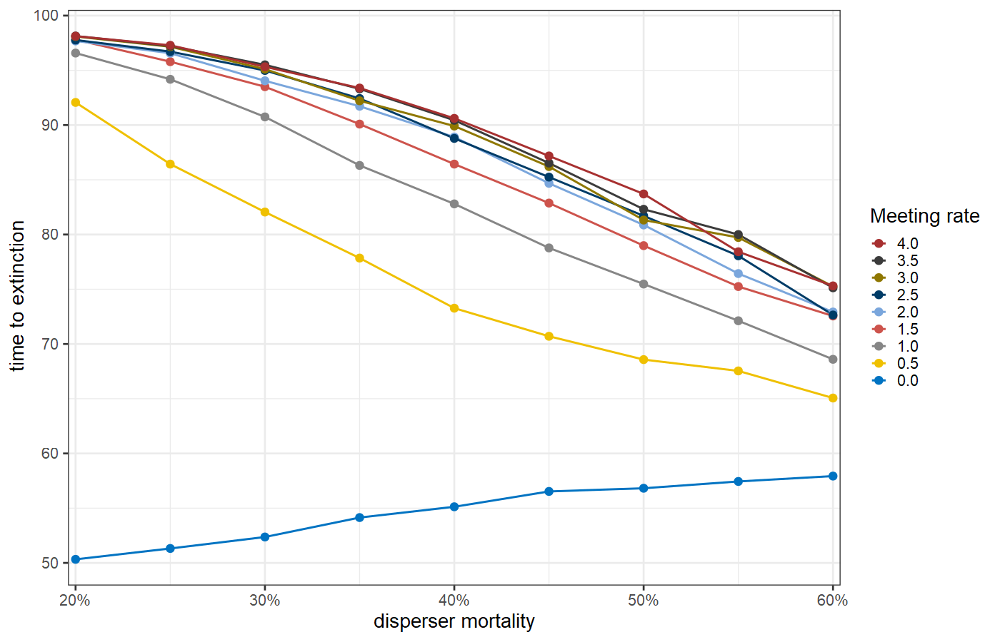

EES 4760/5760
Agent-Based and Individual-Based Computational Modeling
J. Magnolia Gilligan
Class #19: Tuesday, November 3, 2026
See the downloads page or Brightspace.
https://ees4760.jonathangilligan.org/models/class_19/class_19_models.zip
breed [dogs dog]
breed [cats cat]
globals []
turtles-own
[
sex
age
]
dogs-own
[
has-ball?
]
cats-own
[
has-scratching-post?
claw-length
]to go
tick
ask turtles [ set age age + 1 ]
ask dogs [ if has-ball? [ fetch ] ]
ask cats [ if has-scratching-post? [ scratch ] ]
ask turtles [
; this will make an error
if has-scratching-post? [ scratch ]
]
endGood idea: Check that the right breed is calling the function:
to do-cat-stuff
if not is-cat? self
[
print (word "Error: turtle " self " is not a cat.")
stop
]
if has-scratching-post? [ scratch ]
endIf you have breeds, there will still always be
turtles.
ask turtles [...] will ask all breeds of
turtle.
ask dogs [...] will only ask the dogs.
Many turtles- commands have a breed-specific
version:
if any? turtles-here
[
ask turtles-here [forward 10]
]
if any? dogs-on neighbors and any? cats in-radius 5
[
ask dogs-on neighbors
[
chase min-one-of cats [distance myself]
]
]Links can also have breeds.
undirected-link-breed [friendships friendship] ; between friends
directed-link-breed [children-of child-of] ; from parent to children
directed-link-breed [employees employee] ; from boss to employees
to befriend [ new-friend ]
create-friendship-with new-friend ; create friendship
end
to breed [ n ] ; executed in context of parent
create-turtles n [
create-child-of-from myself ; points from parent to new turtle
]
end
to hire [ employee-set ]
create-employees-to employee-set
endYou can change the breed of a turtle or link with
set-breed:
ask one-of tadpoles [ set breed frogs ]
ask one-of friendships [ set undirected-link-breed enmities ]You can specify the default shape of new individuals of a breed (doesn’t affect any already created)
set-default-turtle-shape "circle"
create-cats 1 ; default turtle shape
set-default-shape cats "cat"
set-sefault-shape dogs "dog"
create-cats 1 ; has "cat" shape
ask one-of cats [ set breed dogs ] ; cat becomes dog and changes shape
; to "dog"Note: some shapes, like “cat” and “dog” must be imported into the model from the shapes library, using the shapes editor
Lycaon pictus)

Adapted from Markus Gusset et al., “Dogs on the Catwalk: Modelling Re-Introduction and Translocation of Endangered Wild Dogs in South Africa.” Biological Conservation 142, 2774–81 (2009).
| Status | Mortality |
|---|---|
| Pup | 12% |
| Yearling | 25% |
| Subordinate or alpha | 20% |
| Disperser | 44% |
Frequency of breeding depends on ratio of population to carrying capacity:

When population is 50% of carrying capacity, probability of breeding is 50%
When population is 100% of carrying capacity, probability of breeding is 10%
to go
if ticks >= years-to-simulate or not any? dogs
[
if ticks < years-to-simulate
[
set time-to-extinction ticks
set extinct? true
]
stop
]
step ; "step" does all the work of mating, aging, dispersing, dying, etc.
endto get-p-extinct [ n-runs ]
let n-extinct 0
repeat n-runs
[
setup
while [ticks < years-to-simulate and not extinct?] [ go ]
if extinct? [ set n-extinct n-extinct + 1 ]
]
set p-extinction n-extinct / n-runs
end







- The model enabled us to quantify a critical initial number of packs (two) and individuals per pack (six) necessary for a re-introduced wild dog population to establish itself in the release area.
- We also found a practically feasible intervention regime at which a re-introduced wild dog population had the best chance of persistence:
- intermittently adding packs (at least every 6 years)
- and harvesting disperser groups (as often as every 4 years) for translocation to other release sites, without threatening the small source population.